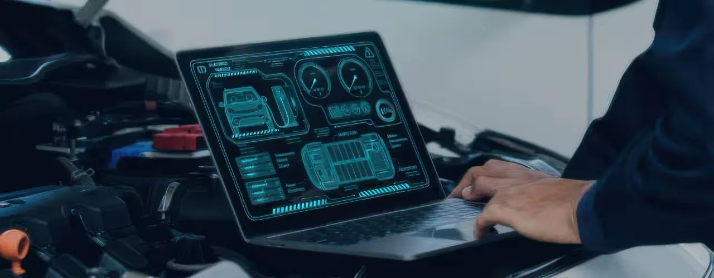

About the Client
A top-tier global mobility OEM is building a comprehensive FoTA platform, supports multiple ECU variants and ensuring secure, remote firmware updates for their expanding connected vehicle ecosystem.
The Challenge
Major challenges faced by the client are:
- Ensuring secure and authenticated firmware delivery across heterogeneous ECU platforms.
- Supporting diverse in-vehicle networks like CAN, Ethernet, and Wi-Fi for firmware transmission.
- Achieving reliable and safe updates with integrated diagnostics and fallback handling.
- Reducing overall update time across large ECU sets to minimize vehicle downtime.
The Solution
CS TECH Ai provides a FoTA platform to the client which is a comprehensive and scalable approach.
To address the above challenges, the following capabilities are integrated into the FoTA platform:
Cybersecurity-First Design:
- Secure Boot, Certificate Management, Digital Signature Validation
- Compliance with ISO/SAE 21434 and UNECE WP.29 for cybersecurity assurance
Multi-Protocol Firmware Distribution:
- Cross-ECU firmware update over CAN, Ethernet, and Wi-Fi
- Adaptive protocol handling with bandwidth optimization and error recovery
Diagnostic-Integrated Update Workflow:
- Seamless integration with UDS (Unified Diagnostic Services) and DTC monitoring.
- Pre-update checks and post-update validation to ensure system health and safety.
Concurrent ECU Flashing:
- Parallel firmware updates across multiple ECUs to significantly reduce update duration
- Load-balancing and sequencing logic to prevent network congestion or conflicts.
The Impact
Reduced ECU Update Time through concurrent flashing, minimizing vehicle downtime by up to 50%.
Strengthened cybersecurity posture with secure boot, digital signature validation, and certificate-based authentication.
Flexible deployment across CAN, Ethernet, and Wi-Fi networks, enabling seamless updates across heterogeneous ECUs.
Operational efficiency by eliminating the need for physical recalls or in-person servicing.
Improved update reliability and safety via integration with UDS and DTC for pre- and post-diagnostic checks.
Future-ready platform architecture, supporting the transition to software-defined vehicles (SDVs).
Significant cost savings in warranty claims, logistics, and support operations.
Regulatory compliance ensured for ISO/SAE 21434 and UNECE WP.29 cybersecurity and OTA mandates.
Scalable, modular FoTA framework ready for next-gen EV and connected vehicle ecosystems.
Faster feature deployment, enabling over-the-air delivery of enhancements and monetizable services.